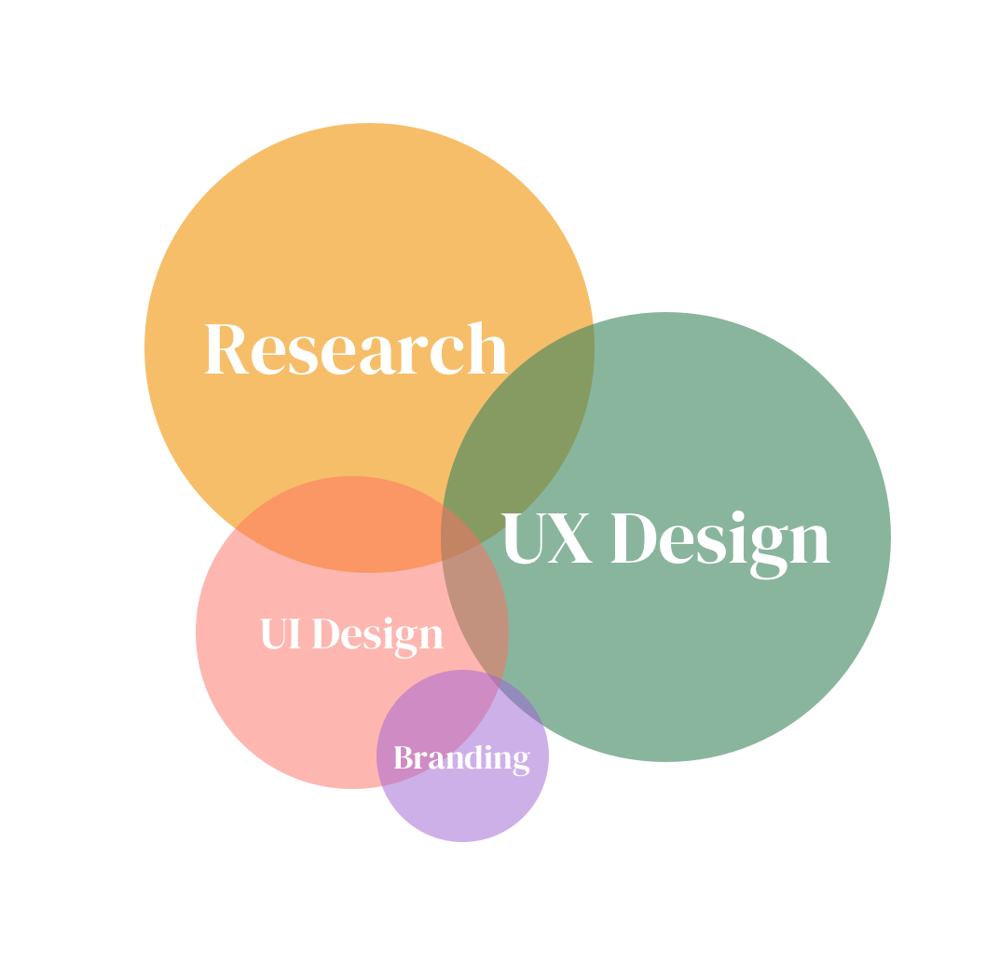
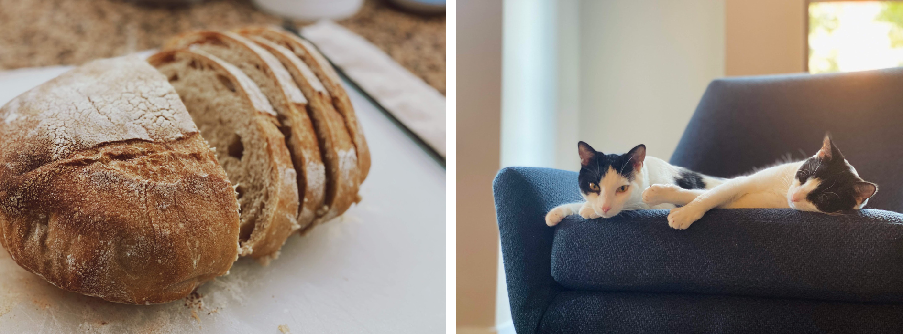

I live in Washington DC and work at Deloitte Digital, primarily with federal government clients. I take pride in the mission-oriented work my job affords me: a lot of our projects center around improving technology systems for aid programs. My work has supported those seeking food secruity, affordable housing, emergency management, and more. So far, during my time at Deloitte, I've supported and led half a dozen projects, ranging from 4-week usability evaluations to 9-month digital transformations. I also founded and led a grassroots community for junior designers and contributed to several initiatives focused on the new-hire experience.
Research is at the root of everything we do as designers. As such, my focus tends toward the earlier stages of the HCD process. While I enjoy working with high-fi visual design and component libraries, my sweet spot is from the beginning of research into strategy and initial design work. My superpower is translating raw data into actionable insights and solutions, and I can do that best when I'm most involved in the early and middle stages of a design project.
I'm originally from Mountain View, California, where I grew up beliving it was normal for houses to cost $2M and for Google to be in your backyard. My first exposure to anything remotely related to UI/UX was during my senior year in high school at Freestyle Academy, where I took Web Production and Graphic Design. I learned that I liked making pretty websites, and found a creative outlet that wasn't journalism (my other passion in high school).
After high school, I decided to leave sunny CA and move across the country to Pittsburgh, PA to attend Carnegie Mellon University. During my first two years at CMU, I wanted to be a software engineer. It seemed like all the cool kids were doing it, and I liked coding. But by the beginning of my junior year, with an engineering internship and several CS classes under my belt, I realized that I didn't want to stare at a computer screen for 40 hours a week for the rest of my life. Throughout my junior year, I found the work I did in my HCI classes much more engaging and fun, so I decided to shift my focus towards UX.
These days, I like to lift weights, bake sourdough bread, and hang out with my two cats.
